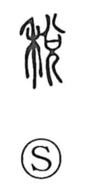

税

Kun: | On: zei
tax ・ land tax ・ levy
Explanation
税 combines 禾, grain, with 兌 as its phonetic. It concerns crops delivered as a levy: agricultural produce taken in payment of tax. The older form is 稅.
The Spring and Autumn Annals records the introduction of a levy assessed by 畝, a measure of field area. A tenth was treated as the general principle of taxation. The grain component keeps the material form of the payment visible.
The word belongs near 脱, shedding or removing, and may carry the idea of drawing out what is within. Through interchange with 脱 it also has uses for releasing, putting aside, or allowing something to go. Tax collection and release are distinct applications within this sound family.